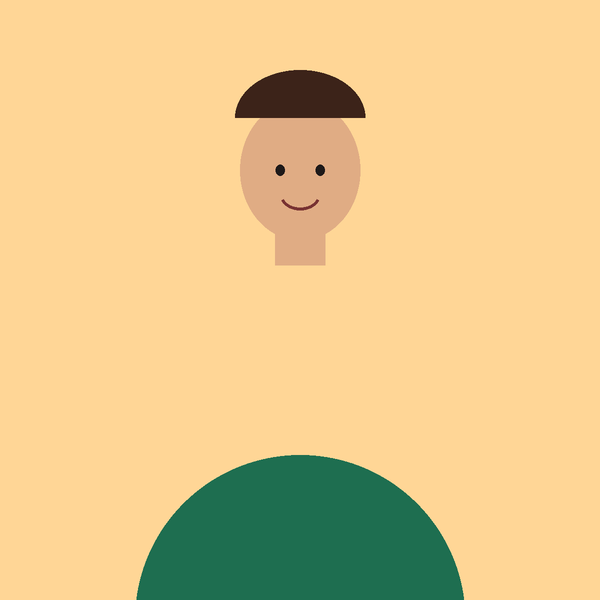
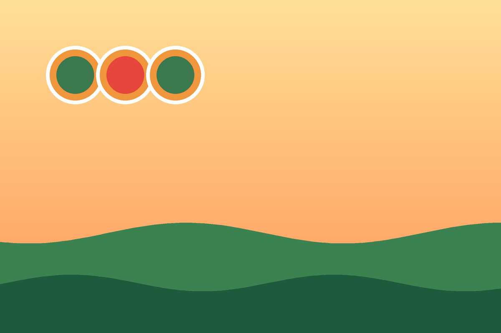
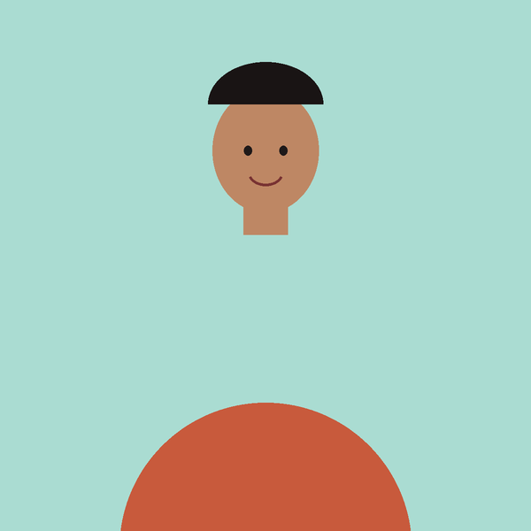
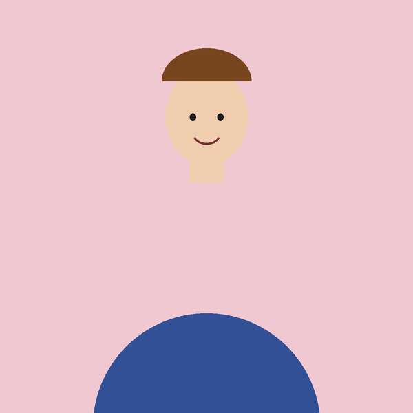
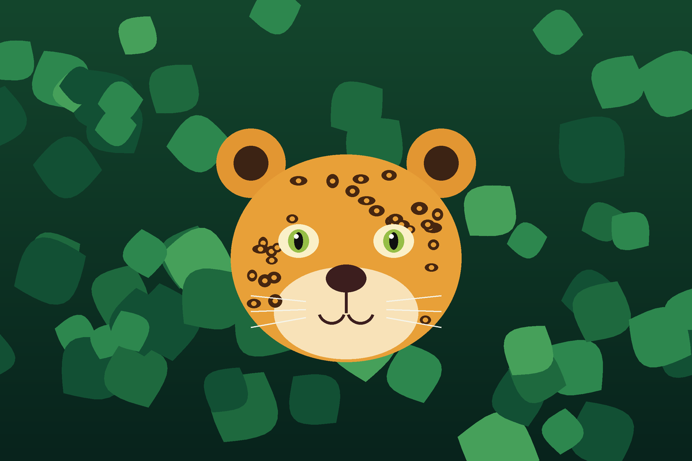
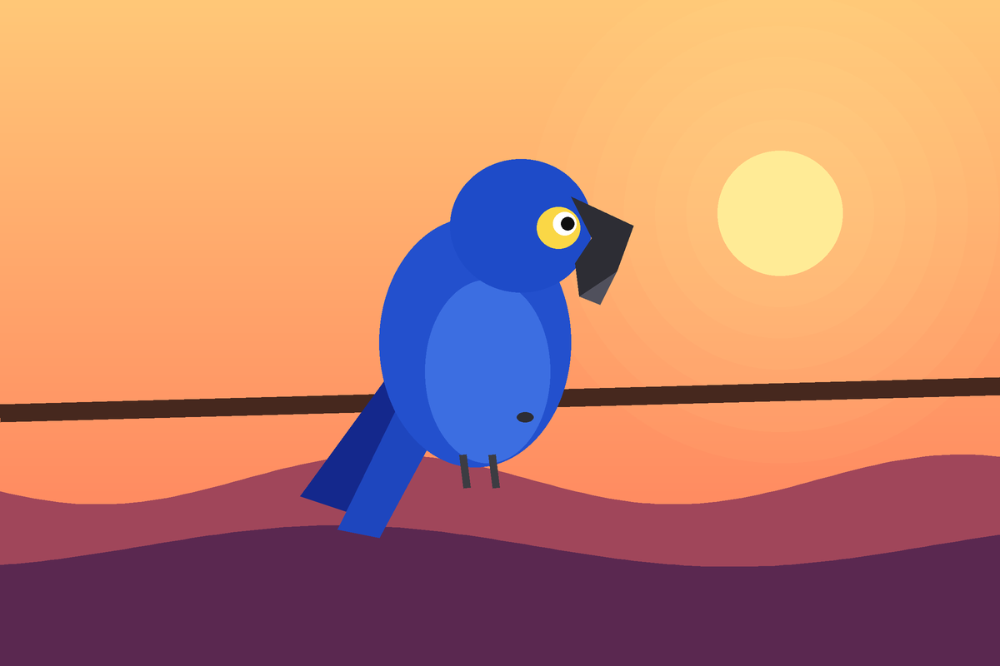
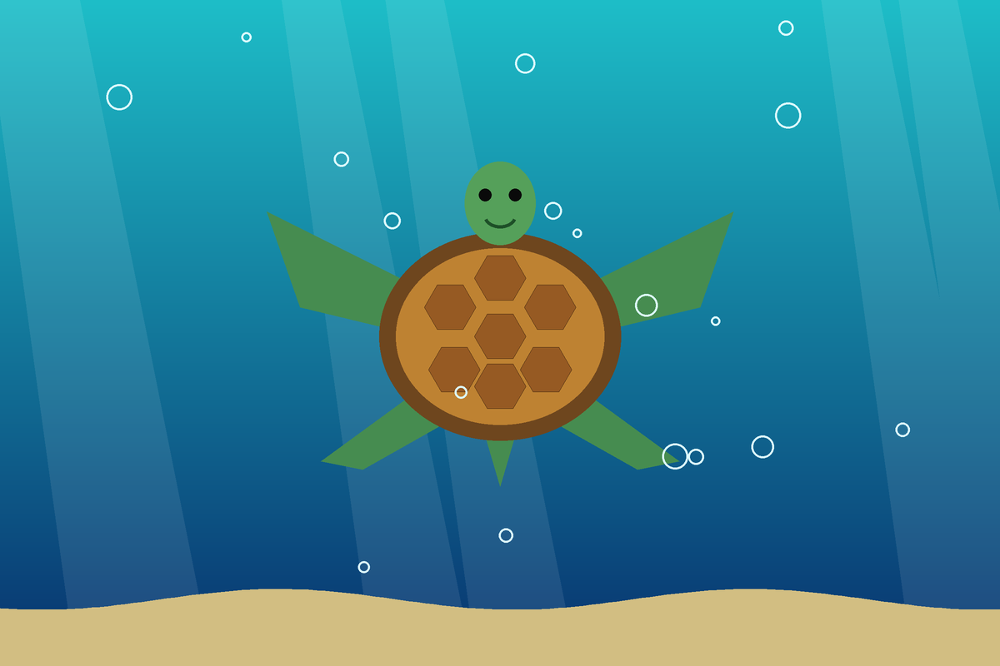
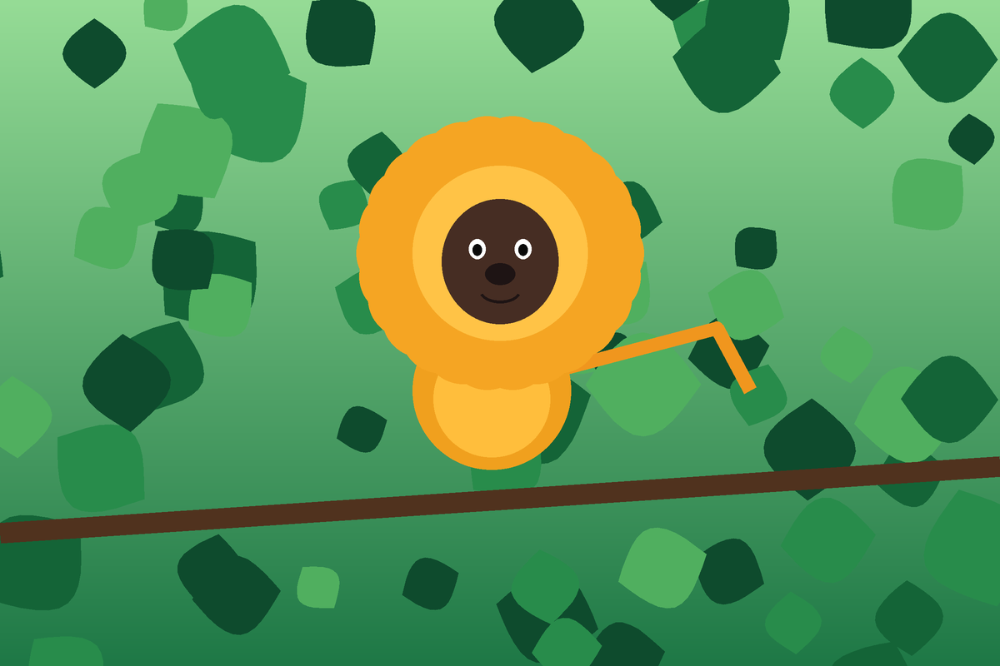
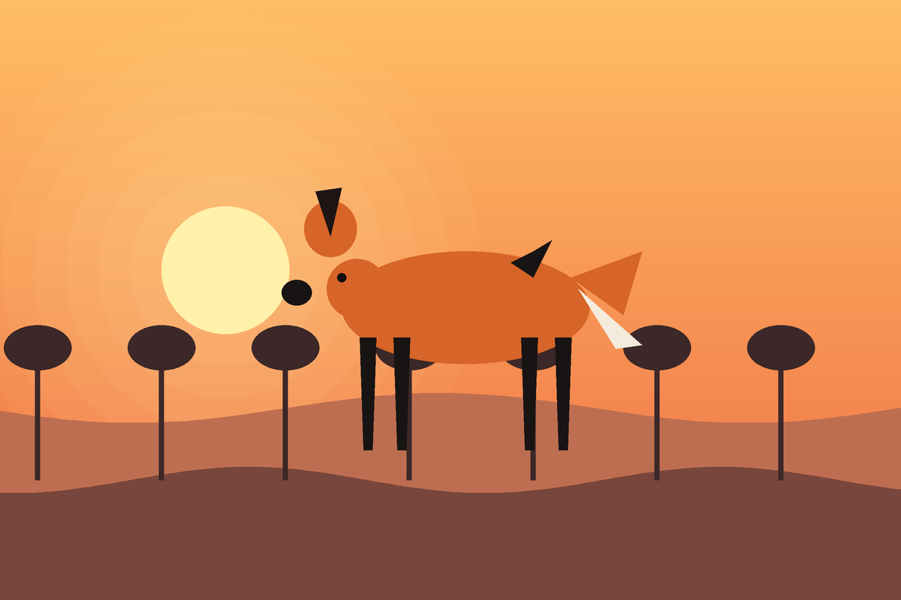
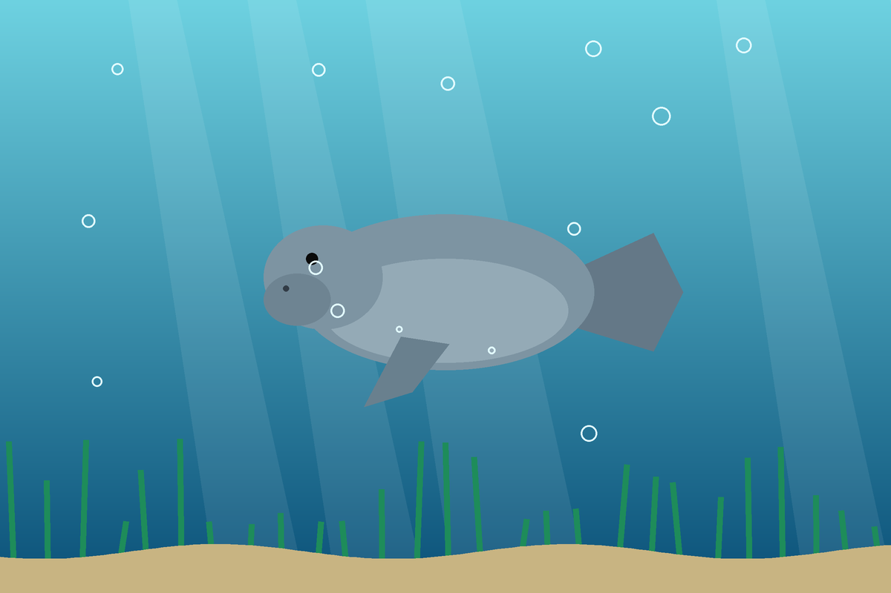

Marina Duarte
Bióloga e fundadora
No Brasil, mais de mil espécies da fauna correm risco de extinção. Ainda dá tempo de mudar essa história, e ela começa com você.

A Guardiões da Fauna nasceu em 2015, quando um grupo de amigos biólogos e estudantes decidiu agir ao ver o desmatamento avançar sobre a casa de animais como a onça-pintada e o mico-leão-dourado.
Hoje trabalhamos em três frentes: proteger os habitats, resgatar e reabilitar animais feridos e levar educação ambiental para escolas e comunidades.
Conscientizar a população e proteger as espécies ameaçadas, para que as próximas gerações conheçam esses animais na natureza e não apenas em fotografias.

Bióloga e fundadora

Veterinário de resgate

Educadora ambiental
Cada projeto cuida de uma espécie ameaçada e do lugar onde ela vive.

Corredores ecológicos que permitem à onça circular com segurança entre as florestas.

Ninhos artificiais e vigilância contra o tráfico de aves silvestres.

Proteção das praias de desova e mutirões de limpeza do litoral.

Reflorestamento da Mata Atlântica e acompanhamento das famílias de micos.

Sinalização em rodovias e resgate de animais atropelados no Cerrado.

Reabilitação de filhotes órfãos e devolução ao mar em segurança.
Toda ajuda conta, seja em dinheiro, seja em tempo.
Contribua com qualquer valor usando a chave abaixo.
doe@guardioesdafauna.org
Seja um guardião fixo: com R$ 25 por mês você ajuda a manter um animal em reabilitação.
Cartão ou boleto
Participe de plantios, mutirões de limpeza e ações nas escolas. Basta ter vontade.
Fale com a gente
Tem uma dúvida, uma ideia ou quer ser voluntário? Escreva para nós.
contato@guardioesdafauna.org
(83) 4000-1234
Rua da Mata Viva, 120
Cajazeiras, Paraíba
Segunda a sexta, das 8h às 17h